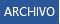

La ventana de Microsoft Word

Barra de herramientas de acceso rápido:
Barra de título:
Cinta de opciones:
Barras de desplazamiento:
Zoom
- Puedes pulsar directamente el valor porcentual (que normalmente de entrada será el tamaño real, 100%).
Se abrirá una ventana donde ajustar el zoom deseado.
- O bien puedes deslizar el marcador hacia los botones - o + que hay justo al lado, arrastrándolo.
Vistas del documento:
Barra de estado:
Cinta de opciones
La cinta de opciones es la barra más importante de Word, porque contiene todas las opciones que se
pueden realizar con los documentos.
- Las herramientas están organizadas en pestañas o fichas (Inicio, Insertar, Vista...),
que a su vez están divididas en grupos
- Algunos grupos de herramientas de la cinta disponen de un pequeño botón en su esquina inferior derecha:
Este botón abre un panel o cuadro de diálogo con más opciones relacionadas con el grupo en cuestión.
Observaciones:
- Las pestañas pueden estar disponibles o no. La cinta tiene un comportamiento "inteligente", que consiste en
mostrar determinadas pestañas únicamente cuando son útiles, de forma que el usuario no se vea abrumado por una
gran cantidad de opciones. Por ejemplo, la ficha Herramientas de tabla no estará visible de entrada, únicamente
se mostrará si insertamos una tabla en nuestro documento y la seleccionamos.
- Ésta función permite una mayor comodidad a la hora de trabajar, pero si en algún momento queremos
ocultar o inhabilitar alguna de ficha de forma manual, podremos hacerlo desde el menú Archivo > Opciones >Personalizar Cinta de opciones,
o pulsando con el botón derecho sobre la cinta de opciones y elegiendo Personalizar Cinta de opciones.
- Pulsando la tecla ALT entraremos en el modo de acceso por teclado. De esta forma aparecerán pequeños
recuadros junto a las pestañas y opciones indicando la tecla (o conjunto de teclas) que deberás pulsar para
acceder a esa opción sin la necesidad del ratón.
Mostrar/Ocultar la cinta de opciones.
Si haces doble clic sobre cualquiera de las pestañas, la barra se ocultará, para disponer de más espacio de
trabajo. Las opciones volverán a mostrarse en el momento en el que vuelvas a hacer clic en cualquier pestaña.
También puedes mostrar u ocultar las cintas desde el botón ocultar y mostrar pestañas de la zona derecha
superior que abirá la ventana que se muestra a continuación, con tres opciones:
Ficha archivo
La pestaña Archivo se encuentra destacada en color azul. Porque, a diferencia del resto de pestañas,
no contiene herramientas para la modificación y tratamiento del contenido del documento, sino más bien
opciones referentes a la aplicación y al archivo resultante. Al situarnos en esta pestaña, se cubre el documento
con un panel de opciones, es por ello que Microsoft ha llamado a esta vista la Vista Backstage.
- La principal característica de la ficha Archivo es que para cada comando de la parte izquierda aparecen unas
opciones en la parte central, y a su vez, para cada una de estas opciones aparecen otras opciones más en la parte
derecha de la pantalla. Por ejemplo, en la imagen vemos como el comando Abrir genera las opciones Documentos
recientes, SkyDrive, ... y al seleccionar Documentos recientes aparece una lista con varios documentos recientes.
- Otra particularidad es la presencia del botón botón atrás
 para volver atrás que sólo aparece en la ficha Archivo.
para volver atrás que sólo aparece en la ficha Archivo.
Guardar, abrir y cerrar documentos
Guardar documentos
Lo que se escribe se va almacenando en la memoria de tu ordenador; si el ordenador se apagara accidentalmente,
se perdería y no lo podrías recuperar. Con el comando Guardar quedará grabado en el disco duro del ordenador (o en un dispositivo externo, como una memoria usb) de forma permanente.
Haz clic en el icono Guardar  de la zona superior izquierda o pulsa las teclas CTRL+G y aparecerá una ventana similar a esta.
de la zona superior izquierda o pulsa las teclas CTRL+G y aparecerá una ventana similar a esta.
Aquí debes elegir en qué unidad guardas el archivo, para guardarlo en el disco duro de tu ordenador selecciona Equipo y pulsa el botón Examinar para que se abra un cuadro de diálogo como el siguiente.
Para guardar un documento debes indicar el nombre con el que lo quieres guardar, el tipo de documento que estás guardando
y la carpeta que contendrá tu documento:
- El nombre lo indicamos en el campo Nombre de archivo.
- El tipo del documento para los documentos Word será Documento de Word, que ya viene escrito por
defecto.
Observación:
Los documentos dentro del disco duro están organizados en carpetas. Por defecto normalmente
se guardarán en la carpeta Mis documentos. Pero siempre podrás elegir otra carpeta o incluso, como comentábamos,
guardarlo en un disco extraíble.
Una vez hayas definido los tres aspectos, deberás hacer clic en el botón Guardar. La barra de título indicará
el nombre que le hayas dado en lugar de Documento1.
Cerrar documentos
Después de guardar un documento, Este continúa en nuestra pantalla y podemos seguir trabajando con él. Una vez
que hemos acabado de trabajar con un documento debemos cerrarlo.
Para cerrar un documento hacer clic en el botón Archivo , y luego hacer clic en Cerrar. Si hemos hecho alguna
modificación en el documento desde la última vez que lo guardamos, nos preguntará si queremos guardar los
cambios; contestar que Sí. Al cerrar el documento veremos cómo este desaparece de la pantalla y vemos el fondo
gris de la ventana Word. El programa sigue abierto, permitiéndonos crear un nuevo documento o abrir uno
existente.
Abrir un documento
Para utilizar un documento que tenemos guardado debemos abrirlo. Para ello hacer clic en la pestaña Archivo

y seleccionar la opción Abrir, o bien pulsar las teclas CTRL+A. Aparecerá una ventana similar a la que
vemos aquí.
Para abrir un documento de los que se muestran en la columna Documentos Recientes, basta con hacer clic
sobre él. Si el documento que queremos abrir no se encuentra en esa lista podemos hacer clic en Equipo.
Ahí podremos hacer clic en una de las carpetas que se muestran o hacer doble clic sobre el documento que
deseamos abrir.
Para abrir un archivo de los que aparecen en la ventana lo hemos de seleccionar haciendo clic sobre él
(quedará marcado de color azul) y luego pulsar en el botón Abrir. Otra forma más rápida de abrir el documento
es haciendo doble clic sobre él. Inmediatamente el documento aparecerá en nuestra pantalla.
Cerrar Microsoft Word
Una vez hemos acabado de trabajar con Word debemos cerrarlo. Para ello, podemos realizar cualquiera de
las siguients acciones:
- Hacer clic en el botón Archivo y eligir la opción Cerrar, como se puede
apreciar en la siguiente imagen:
- Utilizar la combinación de teclas rapida para cerrar la aplicación: ALT+F4.
- La forma más usual de cerrar el programa es la misma que con la mayoría de ventanas en Windows,
presionar
en la esquina superior derecha del programa: